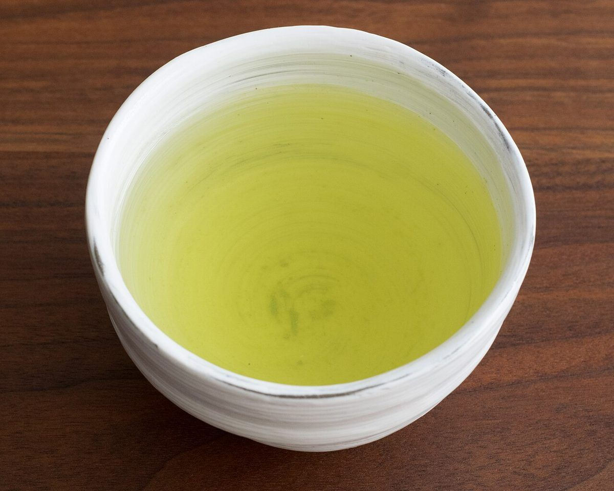
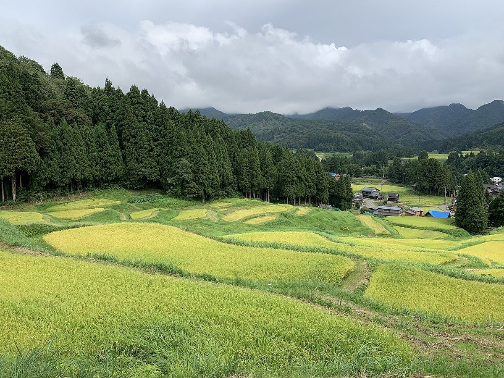

掲載写真はフリー素材のイメージです。店舗の実際の料理・店内ではありません。他地域で撮影されたもの、撮影地が不明なものを含みます。
お店について
| 店名 | あまいろCafe |
|---|---|
| 所在地 | 山口県美祢市秋芳町秋吉3484-1 |
| 電話 | 0837-55-4005 |
| @amairocafe | |
| 営業時間 | 準備中(お問い合わせください) |
| 定休日 | 準備中(お問い合わせください) |
| 席数 | 準備中(お問い合わせください) |
| 駐車場 | 準備中(お問い合わせください) |
| スタッフ紹介 | 準備中(お問い合わせください) |

コンセプト案(制作側の案)
秋芳の道の途中で、ひと息つく場所。飲み物や時間で、気持ちをゆるめる。そんな落ち着いた雰囲気を、このページでは思い描いています。
このコンセプトは制作側の案です。実際のお店の方針ではありません。
秋芳でのひと休み
山口県美祢市秋芳町は、ゆったりとした空気の流れる地域です。お出かけの途中や、ふと時間があいたときに、立ち寄る場所の候補として思い浮かべていただければと思います。
※地域のイメージを制作側が文章にしたものです。

営業時間など準備中の内容は、お気軽にお問い合わせください。
準備中の情報は、お電話でお問い合わせください。